import torch
import torch.nn as nn
# Define the model
model = nn.Sequential(
nn.Flatten(),
nn.Linear(28 * 28, 128),
nn.ReLU(),
nn.Linear(128, 5),
nn.Softmax(dim=1)
)Neural networks
Finally we reach the most hyped model class of today (as of 2026) – (artificial) neural networks! Artificial neural networks have been around since at least 1958, when Rosenblatt presented a computer implementation of the perceptron, a simple ‘single-layer’ neural network, based on earlier work by McCulloch and Pitts (1943). These were inspired by the neurons of the brain, hence the term artificial neural network. Even then the excitement was real:
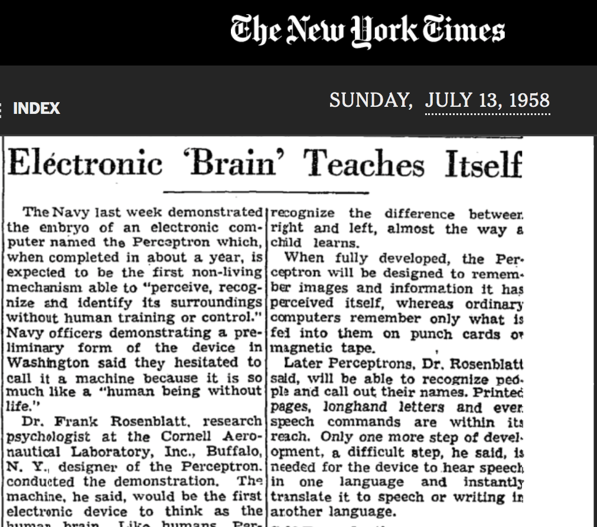
Artificial intelligence and neural networks: brief history
Artificial intelligence (AI), of which ‘machine learning’ is a subfield, has undergone numerous ‘booms’ and ‘busts’ since around 1950. The term AI winter has been used for several of the ‘bust’ cycles in AI, where funding and interest dropped after failures to live up to the hype. This includes ‘bust’ periods such as 1974-1980 and 1987-2000. The current ‘boom’ period (as of 2026) roughly started around 2012. (See e.g. the Wikipedia article AI Winter for further reading and references.)
Within AI, neural networks have undergone their own boom and bust periods. For example, after their initial hype (see NY Times article!), Minsky and Papert published a book Perceptrons in 1969 containing several criticisms of neural networks. Famously, they showed that single-layer neural nets are unable to compute the basic logical operation XOR (exclusive OR). It was known that multiple-layer networks (called multilayer networks or multilayer perceptrons) were not subject to this limitation, but feasible training methods for these were not known. In contrast, many AI researchers between the 1950s and 1980s focused on expert systems and symbolic AI, in which explicit rules are encoded rather than learned from data (note the similarity to encoding ‘engineering knowledge’!)
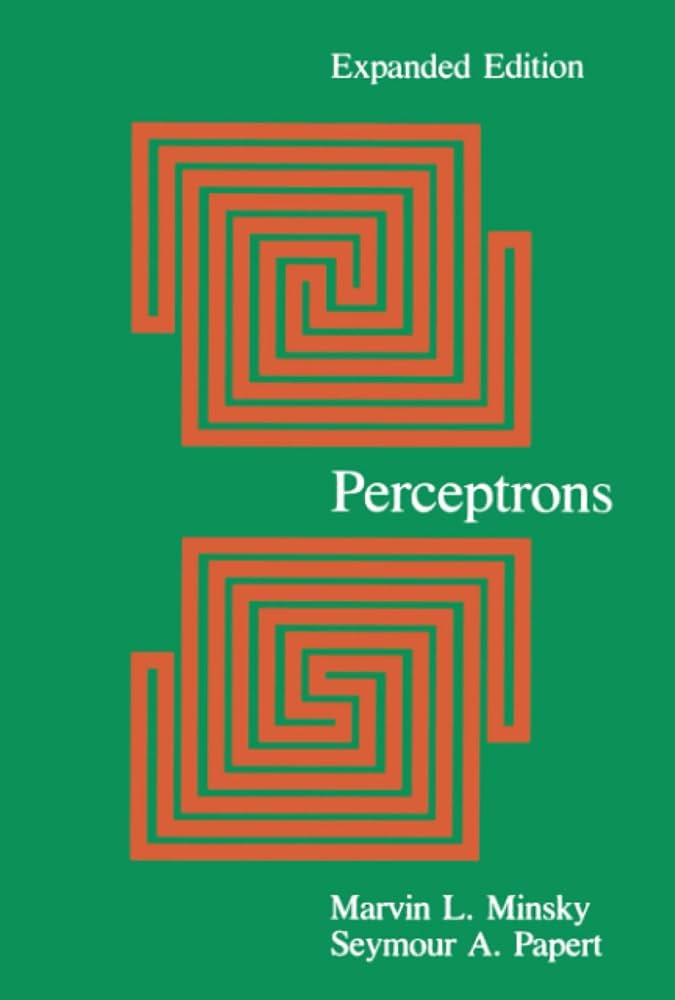
Artificial intelligence and neural networks: brief history continued
Development of the backpropagation algorithm for training multilayer neural networks helped lead to renewed interest in neural networks in the 1980s. Backpropagation – essentially efficiently and automatically using the chain rule to compute gradients and hence carry out optimisation – was popularised in the 1980s, for example in the 1986 paper Learning representations by back-propagating errors by Rumelhart, Hinton, and Williams. However, it wasn’t until around 2012 that the availability of cheap and powerful computer hardware like GPUs, the availability of large datasets, and better architectures and training methods for older ideas such as convolutional neural networks (CNNs) and recurrent neural networks (RNNs), enabled the current explosion of interest (currently the ‘hot’ architecture is the transformer, the ‘T’ in ChatGPT!). These advances have led to a resurgence in machine learning and the use of neural networks with many- (many, many-) layers, often referred to as deep neural networks. Training such networks is known as deep learning.
Machine learning is an opposing but complementary approach to rule-based AI – a yin and yang! The idea is to learn approximate, statistical, rules from the data, rather than impose them a priori. As we have seen, this has strengths and weaknesses in engineering applications! For now, engineers appear to need to continue to learn the ‘rules’ of Newton’s Laws of motion alongside machine learning and statistics. Perhaps, however, we will see the machine learning approach continue to supplant traditional approaches? Or perhaps various hybrid methods, such as those we looked at in the previous section, will come to dominate? Exciting times!
So far we have fitted models to time series, such as a pendulum’s angle over time, including hybrid models that build in physics. In this chapter we introduce neural networks through basic image classification: recognising handwritten digits. In the next chapter we return to time series prediction and hybrid modelling, with a neural network as the data model.
Neural networks vs linear models
What is a neural network? First consider a simple linear model for observations \((x_i,y_i)\), \(i=1,\dots,m\), \[y_i \approx b + x_i w \]
where \(w\) is a weight parameter and \(b\) is called a bias parameter (or intercept in linear regression). This can also be written as
\[y_i \approx 1 b + x_i w = \begin{bmatrix}1 & x_i\end{bmatrix}\begin{bmatrix}b\\ w\end{bmatrix}\] where we include the ‘constant feature’ 1. For \(m\) observations we get the vector equation
\[ y = \bar{X} \bar{w} \] where \[ \bar{X} = \begin{bmatrix} 1 & x_1\\ 1 & x_2\\ \vdots & \vdots\\ 1 & x_m \end{bmatrix} \] and \[\bar{w} = \begin{bmatrix}b\\ w\end{bmatrix}.\] We’ve used a ‘bar’ over the \(X\) and \(w\) to indicate the constant/bias terms are included. For various reasons, neural network folk often keep the weights and bias terms separate, and instead write e.g. \[ y = 1_mb + Xw \] where here \[ X = \begin{bmatrix} x_1\\ x_2\\ \vdots\\ x_m \end{bmatrix} \] and \(1_m\) is a ones vector of length \(m\).
Neural networks vs linear models
So far we have a standard linear model. This can obviously be extended to multiple input features, e.g. if we denote the \(i\)th measurement of the \(j\)th feature as \(x_{ij}\) we have a design/feature matrix of the form: \[ X = [x_{ij}]_{i=1:m,j=1:n} \] and linear model \[ y \approx b1_m + Xw \] for feature weights \[ w = \begin{bmatrix}w_1\\w_2\\\vdots\\w_n\end{bmatrix} \] The neural network folk like to represent this model with diagrams like the below:
The bias term is sometimes depicted explicitly but often left implicit. We almost have a simple neural network! We just need one more element that is normally implied by diagrams like the above\(\dots\)
Activation functions
The main element distinguishing a neural network from a standard linear model is a nonlinearity introduced by an activation function applied to the output of a linear component before the final output is produced. This means our model for a single output has the general form: \[ y \approx f(Xw + 1_mb) \] where \(f\) is a nonlinear function called an activation function that is (usually) applied elementwise, i.e. to each sample realisation, so that \[ y_i \approx f(\text{row}_i(X)w + b) \] where \(\text{row}_i(X)\) is the \(i\)th row of \(X\). Activation functions were originally inspired by the behaviour of biological neurons, which typically only ‘fire’ (send a signal) when a threshold signal is reached. Thus, typical activation functions generally have a threshold or switch-like shape, with varying degrees of smoothness and saturation properties, e.g.
Although originally inspired by biology, mathematically, the important thing is that introducing nonlinearities allows us to represent more complex classes of functions: so-called universal approximation theorems state, roughly, that sufficiently complex neural networks, with nonlinear activation functions, can approximate any continuous function on a bounded range of inputs as closely as we like, given enough neurons. These theorems say that suitable weights exist; they don’t say that training will find them, or how much data that takes.
Multiple neurons and multiple layers
So far we have a single ‘regression’ style equation that represents a single output given multiple features, a weight for each feature, a single bias term, and a nonlinearity applied to the output of the linear component. This is called an artificial neuron, or just neuron for short. Similar models occur in statistics, for example this class of models essentially corresponds to so-called generalised linear models in statistics. What else distinguishes neural networks from standard statistical models?
Another key element in neural networks is that we typically consider multiple neurons, arranged in layers, as in the below diagram. There are three types of layers: input, output, and the intermediate hidden layers. Note, however, that we can have as many hidden layers as we want!
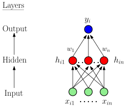
Thus we have a collection of regression-like equations that in turn form the features for another collection of regression-like equations, and so on, until we reach the output. Note, though: without nonlinear activation functions this would still just be a big linear model!
Architecture
The term architecture refers to the structural design of the neural network: how many layers, how many neurons – also called nodes or units – in each layer, etc. The number of layers is referred to as the depth, while the number of neurons in a layer is referred to as the (layer) width.
A feedforward neural network is the archetypal neural network where information moves in only one direction – from the input nodes, through the hidden layers, and finally to the output nodes (as in the diagram above). There are no loops or feedback connections between nodes in the network. Hence its general architecture consists of an input layer, one or more hidden layers, and an output layer:
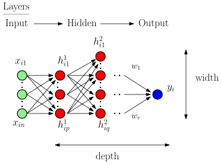
Recurrent neural networks include ‘recurrent connections’ or loops and are hence no longer feedforward neural networks. For simplicity we only focus on very simple feedforward neural networks here. It is relatively simple to experiment with different architectures in PyTorch on your own, however!
How many layers? Deep learning and feature engineering
Since around 2012 there has been a large shift towards increasing deep architectures with many layers. Why? What’s the goal? The following image from ‘Deep Learning with PyTorch’ by Stevens, Antiga, and Viehmann (2020) illustrates the conceptual shift associated with deep learning vs. more ‘traditional’ machine learning/data science:
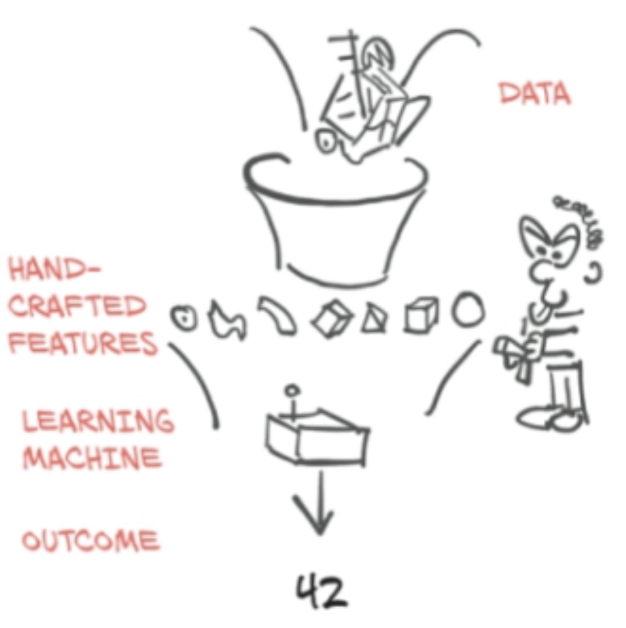
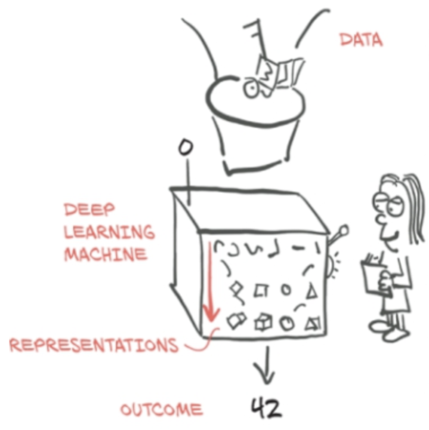
That is, in theory, the goal of deep learning is to automatically learn as much of the data-to-outcome pipeline as possible, reducing the reliance on hand-crafted components. Note, however, that this diagram just illustrates the general conceptual orientation of different approaches, and is not a prescription of what to do. As engineers, we have professional and ethical obligations in terms of safety and reliability, as well as a pragmatic orientation on timely results. Current deep learning pipelines may not be the safest/most reliable/timely approach for many engineering applications!
Building neural networks in PyTorch
So far we’ve mainly just used the tensor data structures available in PyTorch, and a little of its autodiff capabilities. In theory, we could build neural networks from these components. However, the main torch module of PyTorch also contains a submodule torch.nn dedicated to helping us build neural networks more easily.
There are two main ways to build neural networks in PyTorch. The simplest is to use the further submodule of nn, torch.nn.Sequential, which allows us to simply specify a sequence of ‘layers’ to define a neural network model. While we can use this to do familiar things like predict the motion of a pendulum or projectile, we can also use this approach to make a simple neural network for image classification. For example, here is a simple neural network designed to classify \(28 \times 28\) pixel grayscale images into one of five classes:
That’s it! Sort of\(\dots\) we still need to obtain our training data and train our model. But first, let’s consider what’s happening in our model.
Model summary
We can use torchsummary (available in Colab) to summarise the model:
from torchsummary import summary
summary(model, input_size=(1, 28, 28))----------------------------------------------------------------
Layer (type) Output Shape Param #
================================================================
Flatten-1 [-1, 784] 0
Linear-2 [-1, 128] 100,480
ReLU-3 [-1, 128] 0
Linear-4 [-1, 5] 645
Softmax-5 [-1, 5] 0
================================================================
Total params: 101,125
Trainable params: 101,125
Non-trainable params: 0
----------------------------------------------------------------
Input size (MB): 0.00
Forward/backward pass size (MB): 0.01
Params size (MB): 0.39
Estimated Total Size (MB): 0.40
----------------------------------------------------------------We can also count the learnable parameters directly:
# numel() is the number of entries in a tensor;
# add them up over all parameters
n_params = sum(p.numel() for p in model.parameters())
print(n_params)101125The first nn.Linear layer accounts for 100,480 of these, as counted below; the output layer has the remaining \(128 \times 5 + 5 = 645\).
Terminology
Note on terminology: Flatten, ReLU and Softmax are considered ‘layers’ in the PyTorch model, but these are not parameterised. They instead represent data reshaping, data transformations, and activation functions. In standard, mathematical neural network terminology we usually only use the term ‘layer’ for what we would call parameterised layers in PyTorch (other than the input/data layer which is not parameterised).
Furthermore, in a PyTorch ‘layer’ like nn.Linear(28 * 28, 128), its mathematical/diagrammatic counterpart is associated with the output nodes (128) of the PyTorch layer. So the width of the layer in the mathematical/diagrammatic sense is 128. Here we have five PyTorch ‘layers’ corresponding, in standard neural network terms, to one input layer and two (parameterised) layers. That is, we have one (non-parameterised) input layer, one (parameterised) hidden layer, and one (parameterised) output layer. There are also multiple output classes.
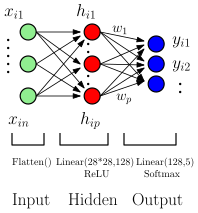
Input layer
The first ‘layer’ (in PyTorch terms) is nn.Flatten. This turns each image into a vector by ‘flattening’ the image row-wise into a long vector:
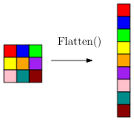
Note that a common mathematical convention (and the Fortran convention) is to flatten column-wise, but NumPy and PyTorch, following C, flatten row-wise by default.
This step is needed because nn.Linear acts on the last dimension of its input. Flattening puts all \(28 \times 28 = 784\) pixel values of each image in that dimension, so a minibatch becomes a tensor of shape [batch_size, 784], with one row per image and the pixel values as its ‘features’. Note though, that other, more advanced image-handling layers (such as convolutional layers) do not require images to be flattened, and can work directly with multi-dimensional tensors.
This is a non-parameterised layer and is essentially our input layer.
Output layer
The nn.Linear(128, 5) layer is the output layer. It maps the 128 hidden neurons to five output classes. Mathematically, the nn.Softmax(dim=1) activation function is also part of this layer.
What does nn.Softmax do? It normalises, in a particular way, an input vector \(z\) (represented as a tensor of course) into a discrete probability distribution vector \(p\) of the same dimension: \[
\text{Softmax}: z \mapsto p
\] where \(z\) and \(p\) are vectors of the same length, and \(p\) sums to one. Hence here we get a probability vector with five entries. Note that our \(z\) vector (tensor) here has a column for each output class, and hence we normalise over the column dimension, dim=1 (see e.g. torchsummary).
Interestingly, in contrast to most activation functions, this function is not applied separately to each pre-activation neuron value. Instead, the softmax function depends on the values of all elements of the vector given, as its job is to ensure the values together sum to one. It is defined by: \[ \text{Softmax}(z)_i = \frac{\exp(z_i)}{\sum_j{\exp(z_j)}} \]
Softmax is usually only used for output layers, to provide a final probability distribution over a collection of discrete classes. It is rarely used ‘inside’ neural networks, i.e. in hidden layers, where elementwise activation functions are common.
Finally, although Softmax is conceptually important, it turns out that, for multi-class classification, it is generally better practice to use the LogSoftmax function, nn.LogSoftmax(dim=1), instead of Softmax. And rather than a sum of squared errors, for multi-class classification this last output layer is usually used with a so-called negative log likelihood loss, nn.NLLLoss() that takes in log-probabilities. Equivalently, we can leave out the final activation and use nn.CrossEntropyLoss, which combines LogSoftmax and NLLLoss; most PyTorch examples do this.
Why this loss? The labels are categories, so a squared error on the label numbers doesn’t make sense: it would treat a 7 as closer to an 8 than to a 1. Instead we choose the weights that make the observed labels most probable. The likelihood is the probability the model gives the labels we observed. Treating the images as independent, it is the product \(L=\prod_i p_i\), where \(p_i\) is the predicted probability of image \(i\)’s correct class; for example, probabilities 0.9, 0.6 and 0.2 for three images give \(L=0.108\). Choosing the weights to maximise \(L\) is maximum likelihood estimation. In practice we minimise the negative log-likelihood, \(-\log L=-\sum_i\log p_i\) (natural log), averaged over the images:
- the log turns the product into a sum, so the loss is an average over images, like the mean squared error, and a minibatch’s average estimates it;
- a product of many probabilities underflows to zero in floating point (for example \(0.9^{60\,000}\)), while the sum of their logs does not;
- the log is increasing, so the same weights maximise \(L\) and minimise \(-\log L\).
Each image contributes \(-\log p_i\), which is zero when \(p_i=1\) and grows without bound as \(p_i\to0\), so giving the correct class a low probability costs the most. (Least squares is also maximum likelihood, for independent Gaussian errors with constant variance.)
Loading data in PyTorch
Let’s look at an example. The machine learning and computer vision communities have collected many benchmark datasets over the years, and have run numerous competitions based on such datasets. (Interestingly, Donoho has argued that such practices have been central to the successes of data science and machine learning).
A classic example dataset is the handwritten digit-recognition dataset called MNIST. This is a dataset of \(28 \times 28\) images of handwritten digits with 60,000 training images and 10,000 testing images. LeCun et al. describe this as
a good database for people who want to try learning techniques and pattern recognition methods on real-world data while spending minimal efforts on preprocessing and formatting.
The PyTorch module torchvision contains useful datasets, models, and image transformations for computer vision (image/video machine learning) applications. There are ‘built-in’ datasets in the module torchvision.datasets, which also contains tools (functions, classes etc.) for working with custom datasets. We can load the MNIST dataset as follows:
import torch
from torchvision import datasets, transforms
# Define transformations to be applied to loaded images
# Here just a conversion to tensor format.
transform = transforms.ToTensor()
# Load training and test datasets
train_dataset = datasets.MNIST(root='./data', train=True,
transform=transform, download=True)
test_dataset = datasets.MNIST(root='./data', train=False,
transform=transform, download=True)The above looks for a local ‘data’ folder. If it doesn’t exist it creates this and downloads the dataset from public sources.
Inspecting the data
The returned objects are MNIST dataset objects, a kind of torch.utils.data.Dataset.
print(train_dataset)Dataset MNIST
Number of datapoints: 60000
Root location: ./data
Split: Train
StandardTransform
Transform: ToTensor()We can access (image, label) pairs of the dataset using standard indexing:
img, label = train_dataset[0]
print('image shape:')
print(img.shape)
print('\n')
print('image label:')
print(label)image shape:
torch.Size([1, 28, 28])
image label:
5Let’s look at the image!
Inspecting the data
import matplotlib.pyplot as plt
# need to permute tensor to matplotlib layout
plt.imshow(torch.permute(img,[1,2,0]),cmap='gray')
plt.show()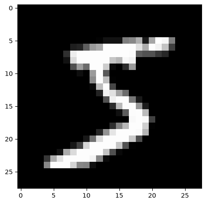
What ToTensor does
Different libraries store images in different layouts (see the tensors chapter):
| Dimensions | Values | |
|---|---|---|
| Image files, NumPy, Matplotlib | (height, width, channels) | integers 0 to 255 (uint8) |
| PyTorch | (channels, height, width) | floats, often in \([0,1]\) (float32) |
| A PyTorch minibatch | (images, channels, height, width) |
A grayscale image has one channel and a colour image three (red, green, blue). MNIST stores its training images as integers in train_dataset.data, with no channel dimension:
# MNIST as stored
print(train_dataset.data.shape, train_dataset.data.dtype)torch.Size([60000, 28, 28]) torch.uint8In the tensors chapter we converted the cat image to a PyTorch tensor by hand, with torch.from_numpy, division by 255 and permute. The transform transforms.ToTensor(), which takes no arguments, does the same in one step:
import imageio.v3 as iio
img_arr = iio.imread('./data/cat3.png') # height, width, channels
# by hand: floats in [0, 1], then channels first
cat = torch.from_numpy(img_arr).float() / 255
cat = torch.permute(cat, (2, 0, 1))
to_tensor = transforms.ToTensor() # no arguments
print(img_arr.shape, to_tensor(img_arr).shape)
print(torch.equal(to_tensor(img_arr), cat))(256, 256, 3) torch.Size([3, 256, 256])
TrueToTensor takes a NumPy array or a PIL image (the image format MNIST passes to it), of shape (height, width, channels) or just (height, width), and returns a float32 tensor of shape (channels, height, width), dividing uint8 values by 255. Each MNIST image therefore becomes a tensor of shape [1, 28, 28] with values between 0 and 1:
# one image after ToTensor
print(img.shape, img.dtype, img.min().item(), img.max().item())torch.Size([1, 28, 28]) torch.float32 0.0 1.0Here .item() turns a one-element tensor into a plain Python number. A Dataset like this can be indexed, train_dataset[i], and has a length, len(train_dataset). That is all a DataLoader needs to produce minibatches.
Normalising the data
It is common to normalise the inputs, for example to have zero mean and unit standard deviation. transforms.Normalize does this, but we supply the mean and standard deviation ourselves, computed beforehand from the training images only:
pixels = train_dataset.data.float() / 255 # scaled to [0, 1]
print(round(pixels.mean().item(), 4), round(pixels.std().item(), 4))0.1307 0.3081transforms.Normalize(mean, std) subtracts mean and divides by std, with one value per channel. It goes in the transform argument of datasets.MNIST, combined with ToTensor by transforms.Compose:
# first convert to a tensor, then compute (x - mean) / std
transform = transforms.Compose([
transforms.ToTensor(),
transforms.Normalize((0.1307,), (0.3081,))])
train_normalised = datasets.MNIST(root='./data', train=True,
transform=transform)Compose applies the transforms in the order listed. Normalize works on tensors, so it must come after ToTensor. Across the training images, the normalised pixels then have mean 0 and standard deviation 1.
Using only the training images follows the same rule as data splitting for choosing \(\lambda\) in the previous chapter: the validation and test data should not inform how we fit the model. In this chapter we skip normalisation for simplicity.
Validation splits and our own data
To choose hyperparameters such as the learning rate or the number of epochs, we hold out part of the training data as a validation set, for example with torch.utils.data.random_split:
train_part, val_part = torch.utils.data.random_split(
train_dataset, [50000, 10000])
print(len(train_part), len(val_part))50000 10000For data we already have as tensors, such as inputs X and targets y from an experiment, torch.utils.data.TensorDataset(X, y) makes a dataset that a DataLoader can use in the same way.
Mini-batching the data
For various reasons, modern neural network models usually process data in small batches called minibatches rather than all at once. Each step then needs only part of the data in memory, and in practice minibatch training has often been found to generalise well; the randomness in each minibatch’s gradient is one suggested reason.
Terminology can be inconsistent, but in general, we call the full dataset the batch, and subsets of the dataset minibatches. PyTorch, though, uses ‘batch’ for the minibatch being processed, as in the batch_size argument of DataLoader below. Given an original indexing \(i\) of data points, we shuffle them into a new order \(i'\) and cut this into a partition \(\mathcal{B}\) of minibatches \(B_1,\dots,B_{mb}\), where \(mb\) is the number of minibatches. For example:
The module torch.utils.data has a tool DataLoader that feeds a dataset to the training loop one minibatch at a time. A Dataset says how to get item \(i\); a DataLoader decides which items, in what order and how many at a time. It takes a dataset, a batch_size and a shuffle option.
train_loader = torch.utils.data.DataLoader(train_dataset,
batch_size=64,shuffle=True)The returned object train_loader is a Python iterable – an object that can return its members (here, minibatches) one at a time, and hence be ‘iterated over’, e.g.:
for mb_imgs, mb_labels in train_loader:If shuffle is true, the dataset is shuffled once at the beginning of each new iteration over the DataLoader. For large datasets, such as images read from disk, the num_workers option lets it prepare minibatches in parallel while the model trains.
A small example shows what a DataLoader does. Each time round a for loop it takes the next few items and stacks them into tensors; the last minibatch holds what is left over:
from torch.utils.data import DataLoader
data = torch.tensor([10, 11, 12, 13, 14, 15, 16]) # 7 data points
loader = DataLoader(data, batch_size=3)
for minibatch in loader:
print(minibatch)tensor([10, 11, 12])
tensor([13, 14, 15])
tensor([16])For MNIST each item is an (image, label) pair, so each minibatch is a pair too: a tensor of 64 images and a tensor of their 64 labels. Here we look at just the first minibatch:
for images, labels in train_loader:
print(images.shape, labels.shape, labels.dtype)
break # just look at the first minibatchtorch.Size([64, 1, 28, 28]) torch.Size([64]) torch.int64The labels are integer class indices, the form the classification loss below expects.
Batch, minibatch and stochastic gradient descent
The above leads to three variations of gradient descent:
- Batch (full-batch) gradient descent
- Minibatch gradient descent
- Stochastic gradient descent
The first uses the full dataset at each iteration of gradient descent, the second uses a minibatch for each iteration of gradient descent, and the last uses a single data point. Note: PyTorch uses optim.SGD for all versions of gradient descent; the difference comes from what data you pass it at each iteration.
The basic training process is to randomly divide the training set into minibatches (possibly being the full batch or single data points). Then we fix the shuffled order and iterate through the batches until all data points have been seen. This is called an epoch. We then re-shuffle the data and divide into new minibatches and continue for some number of epochs. The full dataset will hence be ‘seen’ the same number of times as there are epochs. The total number of gradient descent steps will be the number of epochs times the number of minibatches the dataset is divided into at each epoch.
For example, MNIST has 60,000 training images. With batch_size=32 there are \(60\,000/32=1875\) minibatches per epoch, so 10 epochs take \(10\times1875=18\,750\) steps. If the minibatch size does not divide the number of points, round up: with batch_size=64, \(60\,000/64=937.5\), giving 938 minibatches per epoch (937 full and one of 32), which is len(train_loader).
This is illustrated below \(\dots\)
Batch, minibatch and stochastic gradient descent
Here is simple pseudocode (won’t run!) for the above:
initialise model parameters
create train_loader with batch_size
for epoch in range(num_epochs):
epoch_loss = 0.0
for mb_inputs, mb_labels in train_loader:
# zero out gradients.
optimizer.zero_grad()
# forward pass: compute predictions
mb_outputs = model(mb_inputs)
# compute loss between predictions and true labels
mb_loss = loss_function(mb_outputs, mb_labels)
# Accumulate epoch loss (use .item() to get scalar)
epoch_loss += mb_loss.item()
# backward pass: compute gradients
mb_loss.backward()
# update model parameters
optimizer.step()
# For
# - Batch GD, batch_size = size of training dataset
# - Minibatch GD, batch_size = 32, 64, etc.
# - Stochastic GD, batch_size = 1Training the neural network in PyTorch
Let’s put it all together!
import torch
import torch.nn as nn
import torch.optim as optim
from torchvision import datasets, transforms
from torch.utils.data import DataLoader
# Define the model with explicit LogSoftmax
num_classes = 10 # For MNIST dataset
model = nn.Sequential(
nn.Flatten(),
nn.Linear(28 * 28, 128),
nn.ReLU(),
nn.Linear(128, num_classes),
nn.LogSoftmax(dim=1)
)
# Define transformations (simple conversion to tensor)
transform = transforms.ToTensor()
# Load datasets
train_dataset = datasets.MNIST(root='data', train=True,
transform=transform, download=True)
test_dataset = datasets.MNIST(root='data', train=False,
transform=transform)
# Data loaders
batch_size = 32 # Adjust as needed
train_loader = DataLoader(dataset=train_dataset,
batch_size=batch_size, shuffle=True)
test_loader = DataLoader(dataset=test_dataset,
batch_size=batch_size, shuffle=False)# Loss function and optimiser
criterion = nn.NLLLoss()
optimizer = optim.SGD(model.parameters(), lr=0.01)
# Training loop
num_epochs = 10 # Adjust as needed
for epoch in range(num_epochs):
epoch_loss = 0.0
for mb_data, mb_targets in train_loader:
# Zero the gradients
optimizer.zero_grad()
# Forward pass
outputs = model(mb_data)
# Compute minibatch loss
mb_loss = criterion(outputs, mb_targets)
# Accumulate epoch loss (use .item() to get scalar)
epoch_loss += mb_loss.item()
# Backward pass and optimization
mb_loss.backward()
optimizer.step()
# Compute average loss per minibatch
avg_epoch_loss = epoch_loss / len(train_loader)
# display
print(f'Epoch [{epoch+1}/{num_epochs}], '
f'Average (Per Minibatch) Loss: {avg_epoch_loss:.4f}')Epoch [1/10], Average (Per Minibatch) Loss: 0.8704
Epoch [2/10], Average (Per Minibatch) Loss: 0.3758
Epoch [3/10], Average (Per Minibatch) Loss: 0.3239
Epoch [4/10], Average (Per Minibatch) Loss: 0.2948
Epoch [5/10], Average (Per Minibatch) Loss: 0.2723
Epoch [6/10], Average (Per Minibatch) Loss: 0.2530
Epoch [7/10], Average (Per Minibatch) Loss: 0.2360
Epoch [8/10], Average (Per Minibatch) Loss: 0.2209
Epoch [9/10], Average (Per Minibatch) Loss: 0.2077
Epoch [10/10], Average (Per Minibatch) Loss: 0.1957# Evaluation on test set
correct = 0
total = 0
with torch.no_grad(): # Disable gradient calculation
for data, targets in test_loader:
outputs = model(data)
_, predicted = torch.max(outputs.detach(), 1)
total += targets.size(0)
correct += (predicted == targets).sum().item()
accuracy = 100 * correct / total
print(f'Accuracy on test set: {accuracy:.2f}%')Accuracy on test set: 94.51%What next?
Note: there are many, many more difficulties and subtleties that we won’t go into here (see future courses??)
In general we need to preprocess the data (despite the ‘Deep Learning vs Feature Engineering’ picture!), define appropriate architectures, use the right training methods (including various ‘tricks of the trade’), handle training, testing and validation splits carefully, etc etc.
Furthermore, more complex models are usually constructed by subclassing the nn.Module class rather than using nn.Sequential. We have only just scratched the surface of neural networks and PyTorch. However, hopefully now you can start exploring yourself!
Another useful way to explore is to download pre-trained models. For classic computer-vision models, torchvision.models provides both the architectures and their trained weights:
from torchvision.models import resnet18
model = resnet18(weights='DEFAULT')Many more pretrained models, including language models, are shared on the Hugging Face Hub and loaded with libraries such as transformers and timm.
Example architecture improvements: convolutional neural networks
We have previously mentioned convolutional neural networks (CNNs) as a biology/physics-inspired neural network architecture. Briefly, a convolution kernel is a small ‘patch shaped’ tensor of weights that can be applied to local patches of an image (or video or time-series, for appropriate definitions of ‘patch’) by multiplying the weights of the kernel with the values of each patch, illustrated in the below figure:
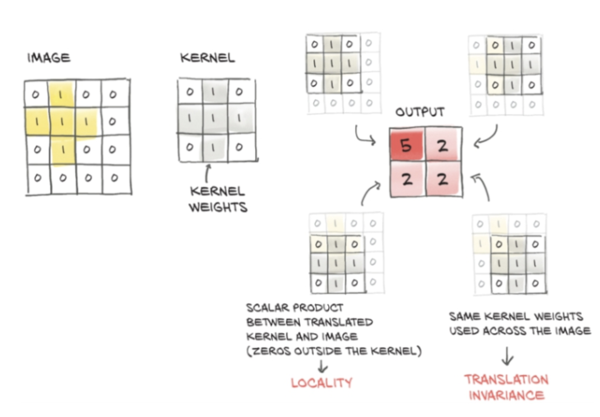
This is a special type of linear operation, to be passed into subsequent nonlinear activation functions. For example, the below snippet manually applies an edge-detection kernel of dimensions 3 by 3, which responds to horizontal edges, to the patches of a cat image usingtorch.einsum (which can apply linear operations like convolution to tensors without flattening).
Manual convolution
# kernel for vertical changes in brightness (horizontal edges)
kernel = torch.tensor([[ -1,-2, -1],
[ 0, 0, 0],
[ 1, 2, 1]],dtype=torch.float32)
padded_cat = F.pad(cat, pad=(1, 1, 1, 1),
mode='constant', value=0)
patches = padded_cat.unfold(1, 3, 1).unfold(2, 3, 1)
filtered_cat = torch.abs(torch.einsum('cijkl,kl->cij',
patches, kernel))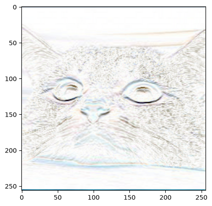
In deep learning, the above result is called the convolution of the image and the kernel (strictly, it is a cross-correlation, since the kernel isn’t flipped; nn.Conv2d computes the same thing). PyTorch implements convolution directly, as we see next.
Convolutional layers in PyTorch
Each output pixel is the sum of the kernel weights multiplied by the \(3\times3\) patch of the padded image around that pixel, exactly as our unfold and einsum code computed. Each output depends only on nearby pixels (locality), and the same kernel weights are used at every position (weight sharing), so a pattern is detected wherever it appears in the image. These are assumptions about images built into the architecture: an inductive bias, in the terms of the first chapter.
nn.Conv2d, and its function form F.conv2d, compute this directly. F.conv2d expects a minibatch of images with shape (batch, channels, height, width) and kernels with shape (output channels, input channels, height, width). The cat has shape (3, height, width), so cat.unsqueeze(1) inserts a channel dimension of size 1, treating each colour channel as a separate grayscale image, and kernel.view(1, 1, 3, 3) gives the kernel one input and one output channel. squeeze(1) removes the extra dimension again, and torch.allclose checks that two tensors agree to within a small tolerance. The result matches the patch-based calculation above, up to rounding error:
same = F.conv2d(cat.unsqueeze(1), kernel.view(1, 1, 3, 3), padding=1)
print(torch.allclose(same.squeeze(1).abs(), filtered_cat, atol=1e-6))TrueIn a network the kernels are learned. A layer nn.Conv2d(in_channels, out_channels, kernel_size, stride, padding) takes:
in_channels: the number of channels in each input image, 1 for grayscale and 3 for colour;out_channels: the number of output channels (often called feature maps), each from its own learned kernel;kernel_size: the height and width of each kernel, e.g. 3 for \(3\times3\);stride: the step between kernel positions (default 1);padding: the number of zero rows and columns added around the border (default 0).
It has one kernel for each pair of input and output channels, plus a bias for each output channel:
conv = nn.Conv2d(1, 8, kernel_size=3, padding=1)
print(conv.weight.shape, sum(p.numel() for p in conv.parameters()))
print(conv(torch.rand(64, 1, 28, 28)).shape)torch.Size([8, 1, 3, 3]) 80
torch.Size([64, 8, 28, 28])Eight \(3\times3\) kernels and their biases make 80 parameters, whereas an nn.Linear layer from the 784 pixels to 784 outputs has \(784\times784+784=615\,440\). For an input of height \(H\), a kernel of size \(k\), padding \(p\) and stride \(s\), the output height is \(\lfloor(H+2p-k)/s\rfloor+1\), and similarly for the width; here \((28+2-3)/1+1=28\).
Pooling and a small CNN
A pooling layer summarises each small block of a feature map by a single number. Max pooling, nn.MaxPool2d(2), keeps the largest value in each \(2\times2\) block, while average pooling, nn.AvgPool2d(2), keeps the mean. By default the blocks don’t overlap (the stride equals the block size), so the height and width halve:
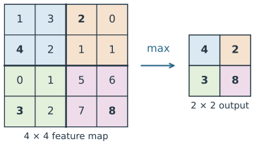
# one image, one channel, 4 x 4
x = torch.tensor([[[[1., 3., 2., 0.],
[4., 2., 1., 1.],
[0., 1., 5., 6.],
[3., 2., 7., 8.]]]])
print(nn.MaxPool2d(2)(x))tensor([[[[4., 2.],
[3., 8.]]]])Pooling has no parameters. It makes the feature maps smaller, so later layers need fewer weights, and it makes the output less sensitive to a feature moving by a pixel within its block.
Stacking convolution, activation and pooling, then flattening into a linear layer, gives a small convolutional neural network (CNN) for MNIST:
cnn = nn.Sequential(
nn.Conv2d(1, 8, 3, padding=1), nn.ReLU(),
nn.MaxPool2d(2), # 8 x 14 x 14
nn.Conv2d(8, 16, 3, padding=1), nn.ReLU(),
nn.MaxPool2d(2), # 16 x 7 x 7
nn.Flatten(), nn.Linear(16 * 7 * 7, 10), nn.LogSoftmax(dim=1)
)
print(sum(p.numel() for p in cnn.parameters()))9098Because the convolutions share their weights, this network has 9,098 parameters, against 101,770 for the fully connected network we trained above. In Lab 5 we build and train LeNet-5, an early CNN for digit recognition, and compare it with the fully connected network.
Physics-informed neural networks: hybrid neural models
In the next chapter, we combine a neural network with a physics-based loss term, giving a hybrid neural model, or physics-informed neural network.